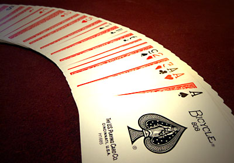
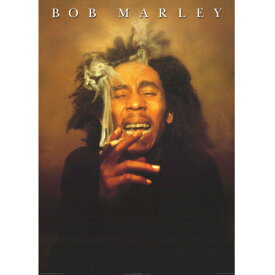

さまざまに人の目をくらまして不思議な事をして見せる芸。マジック。

80年代には、ヒップホップ[1]には三大要素があると言われていた。ラップ、ブレイクダンス、グラフィティがその構成要素である。現在ではDJプレイを加えた四大要素と言われている。ヒップはかっこいい、ホップは跳躍するという意味で、アフリカ・バンバータ[2]は、音楽やダンスのみならず、ファッションやアートを含めた黒人の創造性文化を「黒人の弾ける文化」という意味を込めてヒップホップと呼称した。
トップページ